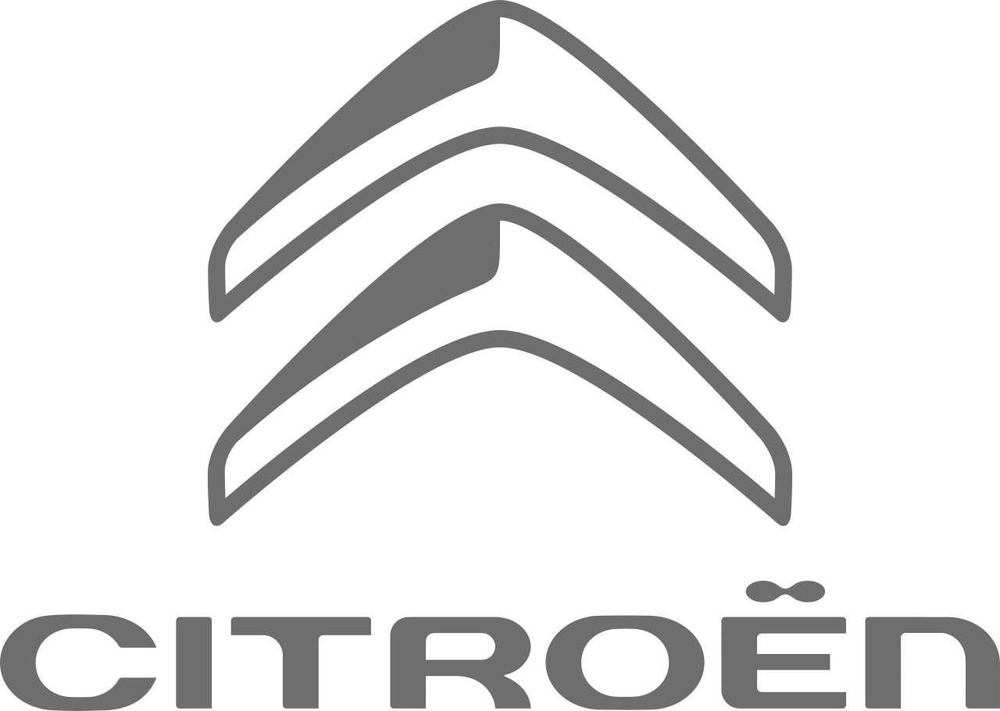

<label>Citroën Brasil
    Escritório do CEO
    Av. das Nações Unidas, 14.171 - Torre A, 12º andar
    04794-000 São Paulo - SP
    Brasil
    
    04 de julho de 2023
    
    Caros admiradores da Citroën,
    
    Hoje, tenho a satisfação de compartilhar uma emocionante parceria entre a Citroën Brasil e a Capelcar. Essa colaboração estratégica representa um novo capítulo em nossa busca pela excelência e inovação no mercado automotivo brasileiro.
    
    A Citroën sempre se destacou por sua abordagem arrojada e criativa no design de veículos, oferecendo conforto, tecnologia e estilo únicos. Agora, com a parceria da Capelcar, estamos entusiasmados em expandir ainda mais nossa presença e proporcionar aos nossos clientes uma experiência de compra e venda de carros inovadora e gratificante.
    
    A Capelcar é reconhecida por sua expertise no mercado automotivo, trazendo consigo uma vasta experiência e conhecimento em compra e venda de veículos. Essa parceria estratégica nos permitirá aproveitar essa experiência para aprimorar nossas operações e oferecer soluções ainda mais personalizadas e convenientes para nossos clientes.
    
    Estamos comprometidos em oferecer produtos de alta qualidade e serviços excepcionais aos nossos clientes. Combinando a visão da Citroën e a experiência da Capelcar, buscamos transformar a jornada de compra e venda de carros em algo memorável, simplificado e agradável para todos os envolvidos.
    
    Além disso, a sustentabilidade é uma preocupação essencial para nós. Juntos, trabalharemos para promover práticas responsáveis e soluções que contribuam para um futuro mais limpo e sustentável. Queremos ser agentes de mudança na indústria automotiva, impulsionando a mobilidade sustentável e o respeito ao meio ambiente.
    
    Agradeço a todos os envolvidos nesta parceria empolgante. Com a união entre a Citroën e a Capelcar, estamos prontos para alcançar novos patamares de sucesso e continuar a oferecer aos nossos clientes experiências automotivas únicas e emocionantes.
    
    Vamos seguir em frente, inspirando o futuro da mobilidade juntos!
    
    Com os melhores cumprimentos,
    
    [Carlos Tavares]</label>